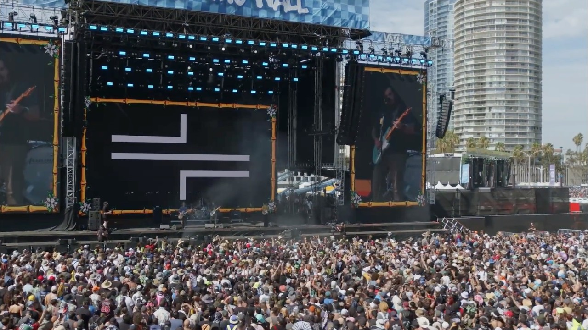
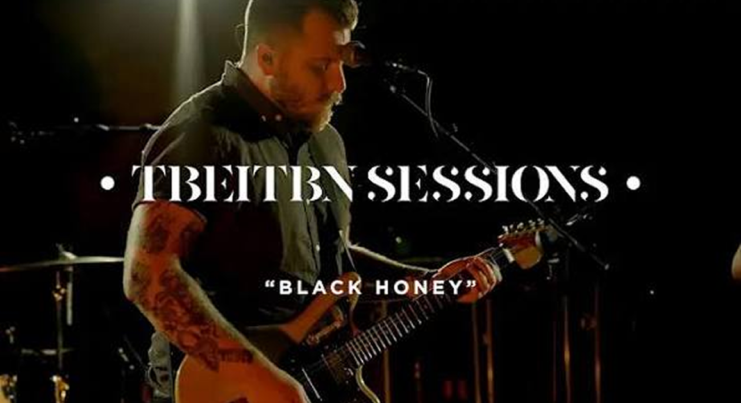

ABOUT
Formada en Irvine, California, en 1998, Thrice es una de las bandas más respetadas del rock alternativo y post-hardcore. Se consolidaron a principios de los dosmiles con discos fundamentales como The Illusion of Safety (2002) y su álbum más famoso, The Artist in the Ambulance (2003). Lo que verdaderamente distingue a Thrice es su constante evolución sonora y su capacidad para adaptarse a diferentes estilos musicales. Lejos de repetirse, rompieron esquemas con The Alchemy Index (2007-2008), una tetralogía de EPs inspirada en los elementos (Fuego, Agua, Aire y Tierra) que exploró desde el folk hasta el rock experimental. A lo largo de su carrera, han integrado con maestría elementos de la electrónica, el blues y el rock progresivo en discos como To Be Everywhere Is to Be Nowhere (2016), reinventándose disco a disco sin perder su identidad.
Miembros

Dustin Kensrue
lead vocals, rhythm guitar, percussion

Teppei Teranishi
lead guitar, keyboards, backing vocals

Eddie Breckenridge
bass guitar, synthesizer, backing vocals, occasional guitars

Riley Breckenridge
drums, percussion
Videos


video